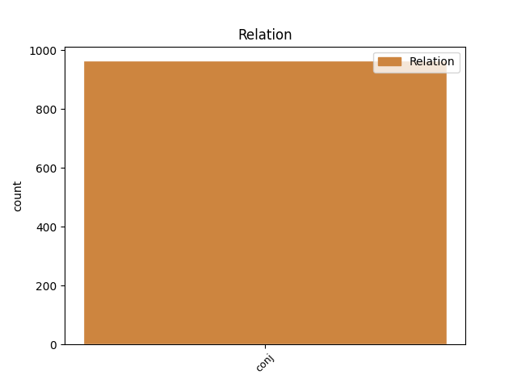
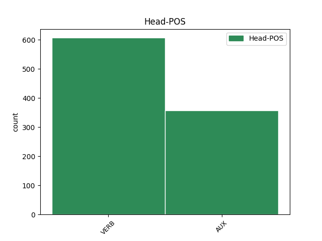
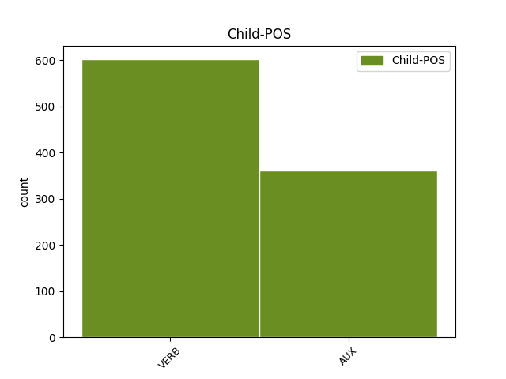

Distribution of features within this leaf



Agreement Rules sorted by frequency.
- When the dependent token is the conjunct(conj) of the head token, and the head token is VERB
1 Hoe _ _ _ _ 0 _ _ _
2 heet _ _ _ _ 0 _ _ _
3 de _ _ _ _ 0 _ _ _
4 ondergrondse _ _ _ _ 0 _ _ _
5 ruimte _ _ _ _ 0 _ _ _
6 waar _ _ _ _ 0 _ _ _
7 hazen _ _ _ _ 0 _ _ _
8 slapen slapen VERB WW|pv|tgw|mv Number=Plur|Tense=Pres|VerbForm=Fin 0 _ _ _
9 en _ _ _ _ 0 _ _ _
10 hun _ _ _ _ 0 _ _ _
11 jongen _ _ _ _ 0 _ _ _
12 groot _ _ _ _ 0 _ _ _
13 brengen brengen VERB WW|pv|tgw|mv Number=Plur|Tense=Pres|VerbForm=Fin 8 conj _ SpaceAfter=No
14 ? _ _ _ _ 0 _ _ _
1 Hoe _ _ _ _ 0 _ _ _
2 noemt _ _ _ _ 0 _ _ _
3 men _ _ _ _ 0 _ _ _
4 iemand _ _ _ _ 0 _ _ _
5 die _ _ _ _ 0 _ _ _
6 omwille _ _ _ _ 0 _ _ _
7 van _ _ _ _ 0 _ _ _
8 zijn _ _ _ _ 0 _ _ _
9 geloof _ _ _ _ 0 _ _ _
10 lichamelijke _ _ _ _ 0 _ _ _
11 kwellingen _ _ _ _ 0 _ _ _
12 heeft hebben AUX WW|pv|tgw|met-t Number=Sing|Tense=Pres|VerbForm=Fin 0 _ _ _
13 verduurd _ _ _ _ 0 _ _ _
14 of _ _ _ _ 0 _ _ _
15 zijn _ _ _ _ 0 _ _ _
16 leven _ _ _ _ 0 _ _ _
17 heeft hebben AUX WW|pv|tgw|met-t Number=Sing|Tense=Pres|VerbForm=Fin 12 conj _ _
18 gegeven _ _ _ _ 0 _ _ _
19 ? _ _ _ _ 0 _ _ _
Disagree Examples:
1 We _ _ _ _ 0 _ _ _
2 waren zijn AUX WW|pv|verl|mv Number=Plur|Tense=Past|VerbForm=Fin 0 _ _ _
3 allemaal _ _ _ _ 0 _ _ _
4 geschokt _ _ _ _ 0 _ _ _
5 door _ _ _ _ 0 _ _ _
6 de _ _ _ _ 0 _ _ _
7 gebeurtenissen _ _ _ _ 0 _ _ _
8 in _ _ _ _ 0 _ _ _
9 Tsjechoslowakije _ _ _ _ 0 _ _ _
10 , _ _ _ _ 0 _ _ _
11 maar _ _ _ _ 0 _ _ _
12 dat _ _ _ _ 0 _ _ _
13 moet moeten AUX WW|pv|tgw|ev Number=Sing|Tense=Pres|VerbForm=Fin 2 conj _ _
14 je _ _ _ _ 0 _ _ _
15 eigenlijk _ _ _ _ 0 _ _ _
16 zien _ _ _ _ 0 _ _ _
17 als _ _ _ _ 0 _ _ _
18 een _ _ _ _ 0 _ _ _
19 rimpeltje _ _ _ _ 0 _ _ _
20 in _ _ _ _ 0 _ _ _
21 de _ _ _ _ 0 _ _ _
22 vijver _ _ _ _ 0 _ _ _
23 . _ _ _ _ 0 _ _ _
1 De _ _ _ _ 0 _ _ _
2 giro _ _ _ _ 0 _ _ _
3 stelde stellen VERB WW|pv|verl|ev Number=Sing|Tense=Past|VerbForm=Fin 0 _ _ _
4 de _ _ _ _ 0 _ _ _
5 minister _ _ _ _ 0 _ _ _
6 voor _ _ _ _ 0 _ _ _
7 om _ _ _ _ 0 _ _ _
8 dan _ _ _ _ 0 _ _ _
9 toch _ _ _ _ 0 _ _ _
10 maar _ _ _ _ 0 _ _ _
11 3 _ _ _ _ 0 _ _ _
12 1/2 _ _ _ _ 0 _ _ _
13 procent _ _ _ _ 0 _ _ _
14 rentevergoeding _ _ _ _ 0 _ _ _
15 te _ _ _ _ 0 _ _ _
16 gaan _ _ _ _ 0 _ _ _
17 geven _ _ _ _ 0 _ _ _
18 , _ _ _ _ 0 _ _ _
19 want _ _ _ _ 0 _ _ _
20 dat _ _ _ _ 0 _ _ _
21 doen doen VERB WW|pv|tgw|mv Number=Plur|Tense=Pres|VerbForm=Fin 3 conj _ _
22 de _ _ _ _ 0 _ _ _
23 banken _ _ _ _ 0 _ _ _
24 ook _ _ _ _ 0 _ _ _
25 op _ _ _ _ 0 _ _ _
26 hun _ _ _ _ 0 _ _ _
27 rekeningen _ _ _ _ 0 _ _ _
28 courant _ _ _ _ 0 _ _ _
29 . _ _ _ _ 0 _ _ _
1 Als _ _ _ _ 0 _ _ _
2 het _ _ _ _ 0 _ _ _
3 hier _ _ _ _ 0 _ _ _
4 niet _ _ _ _ 0 _ _ _
5 een _ _ _ _ 0 _ _ _
6 Amerikaanse _ _ _ _ 0 _ _ _
7 affaire _ _ _ _ 0 _ _ _
8 was _ _ _ _ 0 _ _ _
9 , _ _ _ _ 0 _ _ _
10 zou zullen AUX WW|pv|verl|ev Number=Sing|Tense=Past|VerbForm=Fin 0 _ _ _
11 het _ _ _ _ 0 _ _ _
12 ontbreken _ _ _ _ 0 _ _ _
13 van _ _ _ _ 0 _ _ _
14 dit _ _ _ _ 0 _ _ _
15 detail _ _ _ _ 0 _ _ _
16 me _ _ _ _ 0 _ _ _
17 niet _ _ _ _ 0 _ _ _
18 zijn _ _ _ _ 0 _ _ _
19 opgevallen _ _ _ _ 0 _ _ _
20 , _ _ _ _ 0 _ _ _
21 maar _ _ _ _ 0 _ _ _
22 juist _ _ _ _ 0 _ _ _
23 aan _ _ _ _ 0 _ _ _
24 de _ _ _ _ 0 _ _ _
25 overkant _ _ _ _ 0 _ _ _
26 toont tonen VERB WW|pv|tgw|met-t Number=Sing|Tense=Pres|VerbForm=Fin 10 conj _ _
27 de _ _ _ _ 0 _ _ _
28 pers _ _ _ _ 0 _ _ _
29 altijd _ _ _ _ 0 _ _ _
30 een _ _ _ _ 0 _ _ _
31 morbide _ _ _ _ 0 _ _ _
32 , _ _ _ _ 0 _ _ _
33 om _ _ _ _ 0 _ _ _
34 niet _ _ _ _ 0 _ _ _
35 te _ _ _ _ 0 _ _ _
36 zeggen _ _ _ _ 0 _ _ _
37 , _ _ _ _ 0 _ _ _
38 hypocriete _ _ _ _ 0 _ _ _
39 belangstelling _ _ _ _ 0 _ _ _
40 voor _ _ _ _ 0 _ _ _
41 zulke _ _ _ _ 0 _ _ _
42 zaken _ _ _ _ 0 _ _ _
43 . _ _ _ _ 0 _ _ _
1 , _ _ _ _ 0 _ _ _
2 in _ _ _ _ 0 _ _ _
3 mei _ _ _ _ 0 _ _ _
4 jl. _ _ _ _ 0 _ _ _
5 werd worden AUX WW|pv|verl|ev Number=Sing|Tense=Past|VerbForm=Fin 0 _ _ _
6 een _ _ _ _ 0 _ _ _
7 wervingsovereenkomst _ _ _ _ 0 _ _ _
8 tussen _ _ _ _ 0 _ _ _
9 onze _ _ _ _ 0 _ _ _
10 regering _ _ _ _ 0 _ _ _
11 en _ _ _ _ 0 _ _ _
12 die _ _ _ _ 0 _ _ _
13 van _ _ _ _ 0 _ _ _
14 Marokko _ _ _ _ 0 _ _ _
15 getekend _ _ _ _ 0 _ _ _
16 en _ _ _ _ 0 _ _ _
17 sindsdien _ _ _ _ 0 _ _ _
18 wordt worden AUX WW|pv|tgw|met-t Number=Sing|Tense=Pres|VerbForm=Fin 5 conj _ _
19 er _ _ _ _ 0 _ _ _
20 door _ _ _ _ 0 _ _ _
21 ons _ _ _ _ 0 _ _ _
22 wervingskantoor _ _ _ _ 0 _ _ _
23 in _ _ _ _ 0 _ _ _
24 Casablanca _ _ _ _ 0 _ _ _
25 naarstig _ _ _ _ 0 _ _ _
26 gezocht _ _ _ _ 0 _ _ _
27 naar _ _ _ _ 0 _ _ _
28 jonge _ _ _ _ 0 _ _ _
29 kerels _ _ _ _ 0 _ _ _
30 , _ _ _ _ 0 _ _ _
31 wier _ _ _ _ 0 _ _ _
32 opleiding _ _ _ _ 0 _ _ _
33 gelijk _ _ _ _ 0 _ _ _
34 staat _ _ _ _ 0 _ _ _
35 met _ _ _ _ 0 _ _ _
36 onze _ _ _ _ 0 _ _ _
37 Lts _ _ _ _ 0 _ _ _
38 . _ _ _ _ 0 _ _ _
1 " _ _ _ _ 0 _ _ _
2 Er _ _ _ _ 0 _ _ _
3 is zijn VERB WW|pv|tgw|ev Number=Sing|Tense=Pres|VerbForm=Fin 0 _ _ _
4 , _ _ _ _ 0 _ _ _
5 of _ _ _ _ 0 _ _ _
6 was zijn VERB WW|pv|verl|ev Number=Sing|Tense=Past|VerbForm=Fin 3 conj _ SpaceAfter=No
7 , _ _ _ _ 0 _ _ _
8 onder _ _ _ _ 0 _ _ _
9 de _ _ _ _ 0 _ _ _
10 Europese _ _ _ _ 0 _ _ _
11 industrie _ _ _ _ 0 _ _ _
12 ten _ _ _ _ 0 _ _ _
13 aanzien _ _ _ _ 0 _ _ _
14 van _ _ _ _ 0 _ _ _
15 de _ _ _ _ 0 _ _ _
16 vakverbonden _ _ _ _ 0 _ _ _
17 een _ _ _ _ 0 _ _ _
18 houding _ _ _ _ 0 _ _ _
19 van _ _ _ _ 0 _ _ _
20 : _ _ _ _ 0 _ _ _